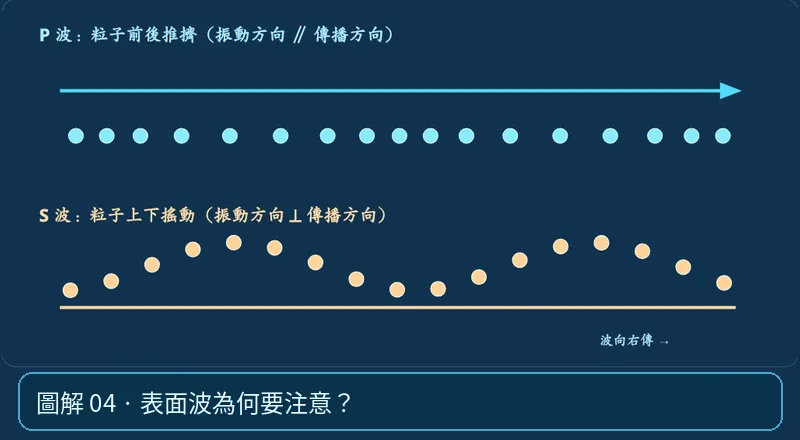

第 01 單元｜圖解 4/6｜課本 p.66–67
表面波為何要注意？
表面波沿地表傳遞，通常到得較晚，但常有較大振幅、較長持續時間；地表搖晃的破壞可能很大，不能只以「誰快」判斷破壞力。
① 看一眼② 操作圖③ 自己推理④ 揭開解答
🔬 這張圖，請自己動手試
操作圖上方的頁籤、滑桿或按鈕；圖片也能左右滑動放大觀看。
互動圖解 · 表面波為何要注意？

原創 SVG 地科教學模型，方便理解，非真實比例、非即時地震資料；互動無法載入時仍有靜態圖。
STEP 01 · 先觀察
👀 眼睛先找線索
把 P 波與 S 波兩條粒子列看成先後通過的能量，再回想地表實際的上下、左右、前後搖晃。
💡 為什麼是這樣？
表面波沿地表附近傳播，某些表面波會使地表粒子呈橢圓或水平剪切運動；地表破壞不能簡單用「P 波或 S 波誰先到」判斷。
🎯 換個問法想一題
地震破壞一定由 S 波造成，和表面波無關嗎？
我想好了，點開看答案 ↓
不對。表面波常在強烈地表搖晃與建物破壞中扮演重要角色。
⚡ 一句記住：表面波跟體波不是一樣